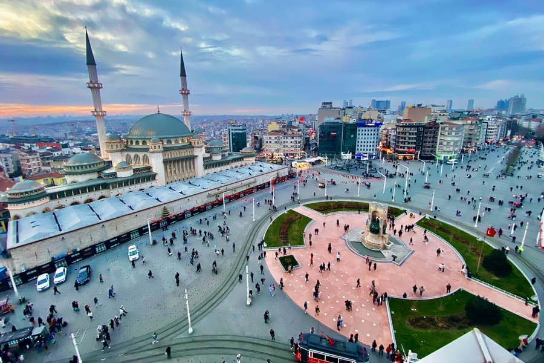
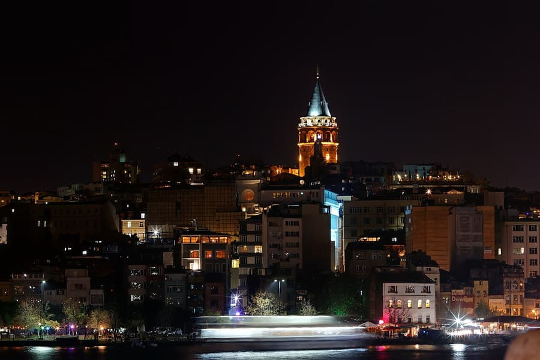
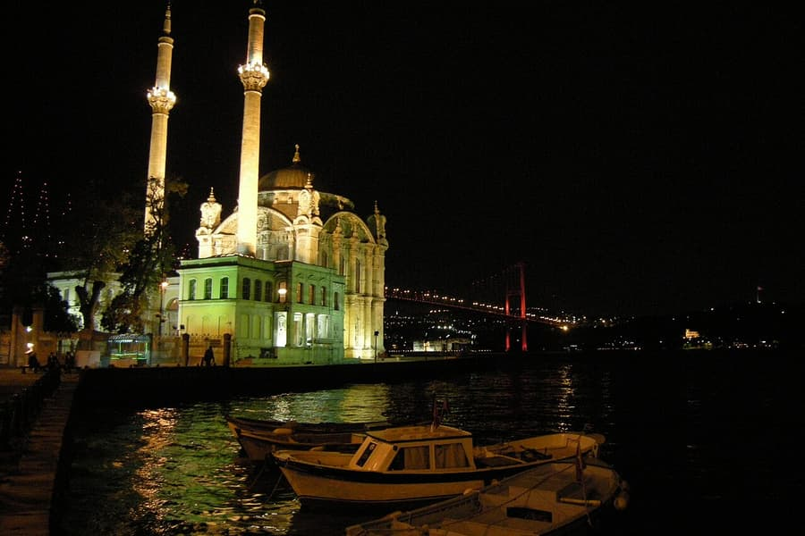
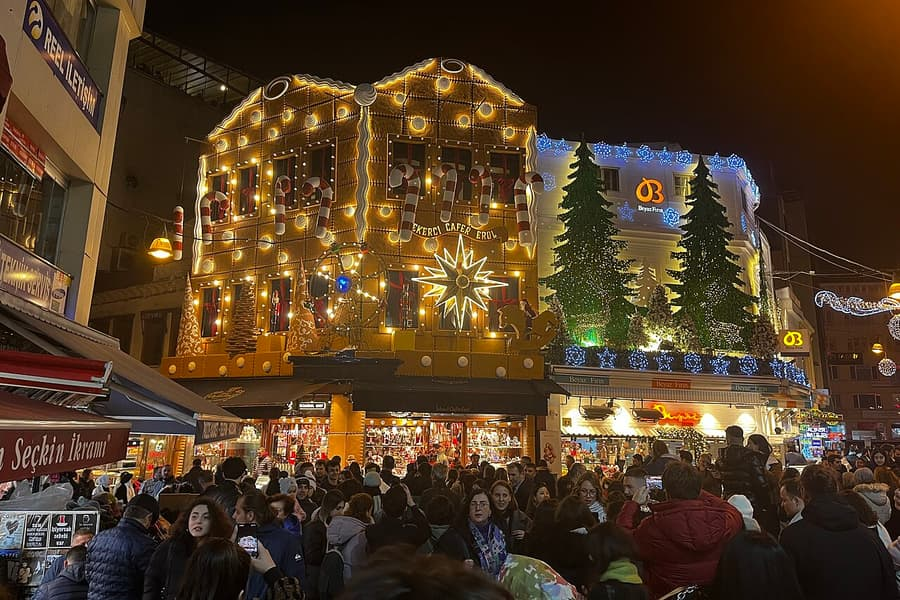
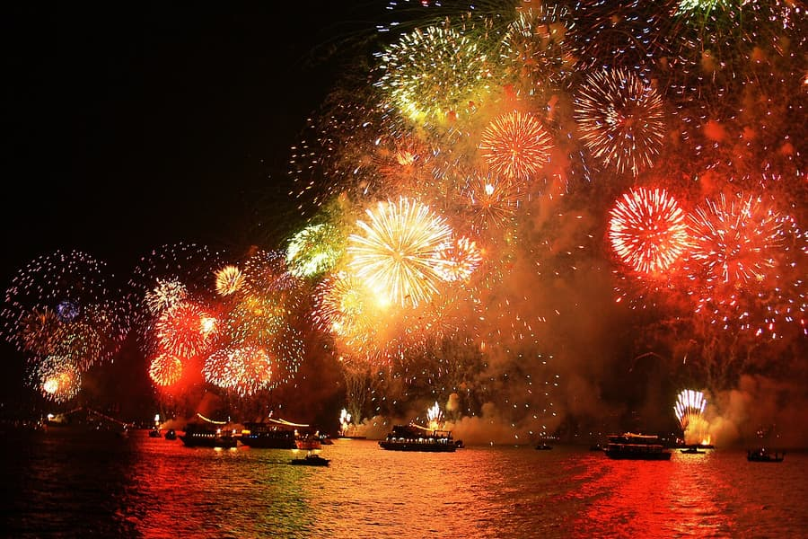
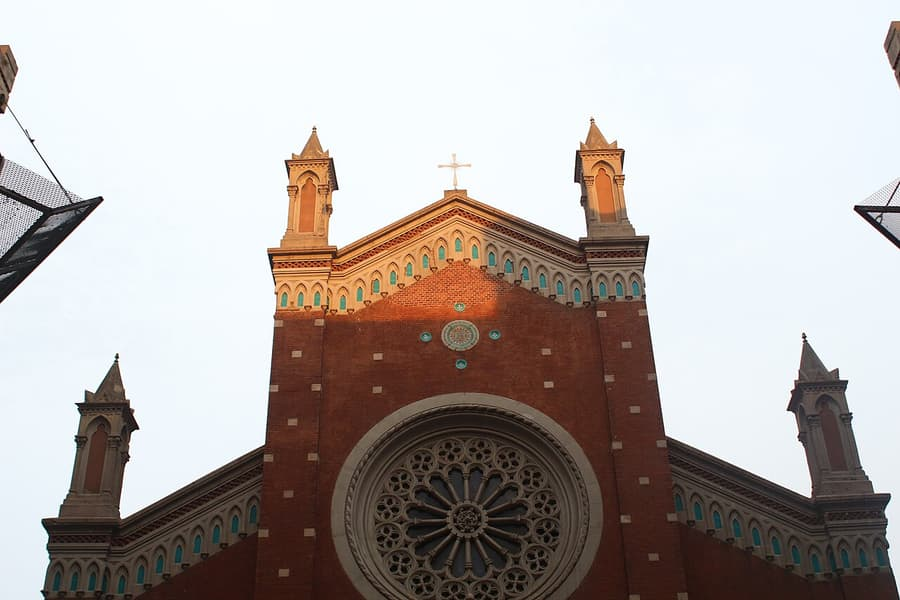

Yılbaşı gecesi, İstanbul’da kışın en büyük gecesi. Türkiye’de dini bir bayram değil, laik bir kutlama: aralıkta her yerde gördüğünüz süslü ağaçlar, ışıklar ve Noel Baba yeni yıl içindir, Noel için değil. Dairelerimiz şehrin kutladığı yerin tam ortasında — Taksim, İstiklal ve Galata arasında — işte biz o geceyi nasıl geçirirdik ve, en az onun kadar önemli, sonra eve nasıl dönülür.
Gece yarısı nerede olmalı

Taksim Meydanı ve İstiklal Caddesi — büyük sokak kutlaması
On binlerce kişi İstiklal’de ve Taksim Meydanı çevresinde birlikte geri sayar. Enerji muazzam, kalabalık da öyle: saat 22.00 civarından itibaren omuz omuza olunur, girişlerde polis çanta kontrolü yapar ve cam şişeye izin verilmez. Atmosfer için gidin; telefonunuzu ve cüzdanınızı ön cepte tutun, birbirinizi kaybederseniz diye bir buluşma noktası belirleyin.

Galata ve Karaköy — teraslar ve kule manzarası
Bizim favorimiz. Galata Kulesi çevresindeki sokaklar hareketli ama Taksim’den çok daha sakin; birçok teras bar ve restoran doğrudan kuleye ve Haliç üzerinden tarihi yarımadaya bakar. Çoğu sabit fiyatlı yılbaşı menüsü satar — kasımda rezervasyon yapın, doluyorlar. Gece yarısından sonra yatağınıza birkaç dakikalık yürüme mesafesindesiniz.

Ortaköy ve Boğaz Köprüsü — havai fişek
Son yıllarda asıl havai fişek gösterisi Ortaköy ve 15 Temmuz Şehitler Köprüsü çevresinde, Boğaz’ın üzerinde, önde ışıklandırılmış camiyle yapıldı. Çok güzel ve çok kalabalık: sahilde yer bulmak için en geç 21.00’de orada olun. Gösteri her yıl garanti değil — genelde aralığın son günlerinde duyurulur, gitmeden kontrol edin. Daha sakin bir manzara için sahil boyunca Arnavutköy ya da Bebek’e yürüyün.

Kadıköy ve Bağdat Caddesi — Anadolu yakası
Pek çok İstanbullunun kutladığı yer. Kadıköy çarşısının sokakları süslü ve barlarla dolu; Bağdat Caddesi trafiğe kapanıp uzun bir sokak geri sayımına sahne olur — son yıllarda kendi havai fişeğiyle. Karaköy’den 21.00’den önce vapura binin, dönüşte gece 1’de vapur beklemek yerine Marmaray’ı ya da metroyu kullanın.

Denizde — yılbaşı teknesi
Eğlence ve yemekli tekneler, sabit menü, müzik ve köprülerin önünde gece yarısı kadeh kaldırmayla Boğaz’da dört-beş saat gezer. Fiyatlar normal bir geceye göre çok daha yüksektir ve her yıl değişir; nelerin dahil olduğunu (içecek, transfer, masa) karşılaştırın ve haftalar önceden rezervasyon yapın. Aile ya da grupsanız, özel yat kişi başına sandığınızdan ucuza gelebilir — bize sorun, hâlâ müsait olanlara bakalım.
O gece ulaşım
Geçen yılbaşına göre; ayrıntıları belediye her aralıkta yeniden duyurur.
Metro bütün gece çalışır
Geçen yılbaşında Taksim ve Şişhane’den geçen M2 dahil Metro İstanbul’un bütün hatları 24 saat çalıştı. Tramvaylar ve Kabataş–Taksim füniküleri gece 2’ye kadar açıktı, yüzlerce ek otobüs seferi kondu. En kalabalık noktaların yanındaki istasyonlar güvenlik için kısa süreliğine kapatılabilir — bir sonrakine yürüyün.
Taksiyi unutun
Gece 23.00 ile 03.00 arasında Taksim, Galata ve Ortaköy çevresinde taksi bulmak neredeyse imkânsızdır, birçok yol da kapalıdır. Yürümeyi ya da metroyu planlayın. O gece merkezde kalmanın asıl nedeni bu: Galata ya da Taksim’den eve dakikalar içinde yürürsünüz.
31’inde havalimanından mı geliyorsunuz?
Mümkünse saat 18.00’den önce inin: akşamın erken saatlerinden itibaren Beyoğlu’na giden yollar çok yavaşlar, bazı sokaklar kapanır. O gece taksi aramaktansa önceden ayarlanmış bir transfer çok daha rahattır.
Türkiye’de yılbaşı nasıl kutlanır
Aile yemeği ve büyük ikramiye
Pek çok aile evde uzun bir yemek yer — çoğu zaman hindi ya da dolmalar, mezeler ve tatlılar — ve televizyonda yılbaşı programlarını izler. Herkesin elinde, o gece çekilen ve yılın en büyük ikramiyesi olan Milli Piyango yılbaşı biletinden bir parça vardır.
Bereket için nar, şans için kırmızı
Nar bereketin simgesidir: bazı aileler gece yarısından sonra kapının önünde nar kırar, yıl taneleri kadar dolu geçsin diye. Gecenin şans rengi kırmızıdır; her vitrinde görürsünüz.

İstanbul’da Noel
25 Aralık Türkiye’de normal bir iş günüdür ama şehrin kiliseleri Noel’i kutlar. Dairelerimize birkaç dakika uzaklıktaki İstiklal Caddesi’ndeki Sent Antuan Kilisesi’nde Noel arifesi ayinleri yapılır — saatleri aralıkta kiliseden teyit edin.
1 Ocak: ağır ve uykulu bir sabah
Yılbaşı resmi tatildir. Şehir geç uyanır; bu yüzden sabah, bütün sezonun Sultanahmet için en sakin zamanıdır; öğleden sonra aileler dışarı çıkar ve gezilecek yerler kalabalıklaşır. 1 Ocak’ta toplu taşıma bazı yıllar ücretsiz oldu — o hafta kontrol edin.
Gece yarısından sonra eve yürüyün
Galata Kulesi’nin tam karşısında: teraslar ve İstiklal kapınızda, 5 kişilik.
Kuleye 20 adım, Haliç’e bakıyor: 2 yatak odası, 8 kişilik — bütün ekip sığar.
“Fransız Sokağı”nda, Taksim Meydanı’na 10 dakika yürüyüş: 10 kişiye kadar 4 yatak odası — birlikte kutlayan aileler ve arkadaşlar için ideal.
Sakin Çukurcuma’da, Taksim’e 15 dakika yürüyüş: kutlamaya yakın, gürültüye uzak.
Haritada
Yol tarifi için bir pine dokunun. Logolu pinler dairelerimiz.
Harita verisi © OpenStreetMap katkıcıları.
Bilmekte fayda var
- Erken rezervasyon yapın: yılbaşı haftası yılın en yoğun haftalarından biridir. Galata ve Taksim’deki restoranlar, tekneler ve daireler kasımdan itibaren dolar.
- Sıkı giyinin: aralık sonunda geceler 5–10 °C civarındadır, denizde sık sık yağmur ya da rüzgâr olur, kar da yağabilir.
- Güneş 16.45 civarında batar; 31’indeki gezilerinizi sabaha ve öğleden sonranın erken saatlerine planlayın.
- Cam şişeleri ve havai fişeği evde bırakın: kalabalıkta yasaktır ve polis çanta kontrolü yapar.
- Havai fişek, ulaşım saatleri ve ücretsiz ulaşım gibi ayrıntılar her yıl değişir; belediye aralıkta duyurunca bu rehberi güncelliyoruz.
Boğaz’ı kalabalık olmadan mı görmek istersiniz?
Hancı Travel, Boğaz’da gün batımı turları, özel yat ve yaz aylarında yüzme turları düzenler.
Galata'nın kalbinde konaklayın
Galata, Taksim ve Beyoğlu'ndaki dairelerimiz bu rehberdeki her yere yürüme mesafesinde. Doğrudan rezervasyon yapın, Airbnb'den %10 daha az ödeyin.
Diğer İstanbul rehberleri

🏠 İstanbul'da nerede kalınır? En iyi semtlerin dürüst karşılaştırması
Galata, Karaköy, Taksim, Cihangir, Sultanahmet, Beşiktaş, Nişantaşı mı Kadıköy mü? İstanbul'un her semti kime uygun, ulaşımı nasıl, eksileri ne — yerel bir ev sahibi ekibinden.
Rehberi okuyun →
🗼 Galata Kulesi rehberi: bilet, saatler, en güzel manzaralar ve yakınında konaklama
2026’da Galata Kulesi’ni ziyaret etmek: bilet fiyatı, açılış saatleri, kuyruktan nasıl kaçınılır, 700 yıllık tarihi, kuleyi ücretsiz izleyebileceğiniz en iyi noktalar ve çevresi — kulenin dibinde yaşayan ev sahiplerinden.
Rehberi okuyun →
🗺️ 3 günde İstanbul: Galata’dan başlayan yerel gezi planı
Gerçekçi bir 3 günlük İstanbul planı: tarihi yarımada ve çarşılar, Galata ve Boğaz, sonra vapurla Anadolu yakası — kapalı günler, 2026 bilet fiyatları ve gün batımı noktalarıyla.
Rehberi okuyun →
🛥️ Boğaz turu rehberi: Şehir Hatları vapuru mu, tur teknesi mi, özel yat mı?
İstanbul’da Boğaz’ı gezmenin bütün yolları dürüstçe karşılaştırıldı: Şehir Hatları kısa ve uzun Boğaz turu, tur tekneleri, gün batımı turları, özel yat ve yemekli turlar — 2026 fiyatları, saatleri ve yol boyunca görecekleriniz.
Rehberi okuyun →
📅 İstanbul’a ne zaman gidilir? Aylara göre hava, kalabalık ve fiyatlar
İstanbul’a ne zaman gidilir: mevsimlere göre sıcaklık, yağış ve deniz suyu, festivaller, 2027 Ramazan ve bayram tarihleri ve dairelerin en ucuz olduğu dönemler — yerel bir ev sahibi ekibinden.
Rehberi okuyun →
✈️ İstanbul havalimanlarından Galata ve Taksim'e nasıl gidilir?
İstanbul Havalimanı (IST) ve Sabiha Gökçen'den (SAW) Galata, Taksim ve Beyoğlu'na taksi, Havaist/Havabus ve metro ile ulaşım — süreler, ücretler ve dairelerimize son adım.
Rehberi okuyun →
🍽️ Galata ve Beyoğlu'nda ne yenir, ne içilir: yerel önerilerimiz
Galata, Karaköy, Cihangir ve Beyoğlu'nda kendi misafirlerimize önerdiğimiz restoranlar, kafeler, barlar ve tatlıcılar.
Rehberi okuyun →
🗼 Galata ve Beyoğlu'nda gezilecek yerler: yerel rehber
Galata Kulesi, Kamondo Merdivenleri, Pera Müzesi, İstanbul Modern, Çukurcuma ve daha fazlası — artı Tarihi Yarımada'ya kolay geziler — Galata'da yaşayan bir ekipten.
Rehberi okuyun →